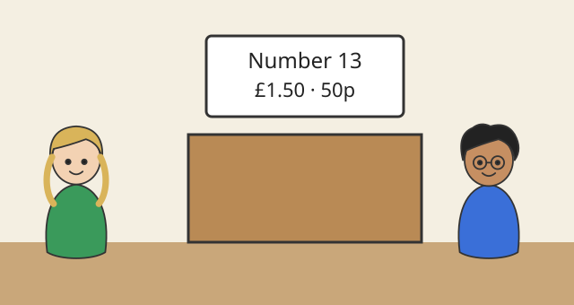

Zahlen und Preise
Mit einem KI-Tutor lernen
Ein KI-Tutor erklärt dir diese Seite und hilft dir bei den Übungen. Wähl deinen Assistenten:
Mit Claude öffnen Mit ChatGPT öffnen Mit Mistral Vibe öffnen
Du nutzt dein eigenes Konto beim Anbieter. Der Assistent ist kein Angebot von lernapps.net: lernapps liefert nur Inhalte und Übungen. Die Wahl gilt für alle Seiten, nur auf diesem Gerät.
Sophie im Schulkiosk
In der Pause geht Sophie mit Amir zum Schulkiosk. An der Theke hängen Nummern und Preise. Alles ist auf Englisch.

Der Schulkiosk: Sophie (links) und Amir (rechts) vor der Theke mit dem Schild.
Quelle: eigene Zeichnung. Lizenz: CC-BY-4.0.Das kannst du danach: Zahlen bis 100 auf Englisch sagen und schreiben und einen Preis in Pfund und Pence nennen.
Übung
Lösung
13 richtige Antwort
Thirteen ist die Zahl 13. Die Endung -teen steht für die Zahlen von 13 bis 19.
30
Dreißig heißt thirty. Es klingt ähnlich, aber thirteen hört man hinten lang, thirty vorne betont.
3
Drei heißt three.
Thirteen (13) endet auf -teen, thirty (30) auf -ty. Am Ende erkennst du den Unterschied.
Mehr dazu:
Zahlen und Preise auf dem Poster
Die Zahlen bis 12 lernst du einzeln. Ab 13 setzt du sie zusammen. Aus 4 wird fourteen (14) und forty (40).
| Zahl | Englisch |
|---|---|
| 0 | zero |
| 1 | one |
| 2 | two |
| 3 | three |
| 4 | four |
| 5 | five |
| 6 | six |
| 7 | seven |
| 8 | eight |
| 9 | nine |
| 10 | ten |
| 11 | eleven |
| 12 | twelve |
| Grundzahl | -teen | -ty |
|---|---|---|
| 3 | thirteen | thirty |
| 4 | fourteen | forty |
| 5 | fifteen | fifty |
| 6 | sixteen | sixty |
| 7 | seventeen | seventy |
| 8 | eighteen | eighty |
| 9 | nineteen | ninety |
So geht es weiter: 20 ist twenty, 21 ist twenty-one und 100 ist one hundred. Zwischen Zehner und Einer setzt du einen Strich: seventy-five.
| Ausdruck | Bedeutung |
|---|---|
| Number thirteen, please. | Nummer dreizehn, bitte. |
| It's one pound fifty. | Das kostet 1,50 Pfund. (£ ist das Pfund, p sind Pence) |
| It's two pounds fifty. | Das kostet 2,50 Pfund. |
| It's fifty pence. | Das kostet 50 Pence. |
Merke
Bei thirteen und thirty hörst du den Unterschied an der Betonung. Bei -teen ist das Ende lang und betont (thir-TEEN), bei -ty ist der Anfang betont (THIR-ty). 4 schreibst du four, aber 14 fourteen und 40 forty, ohne u.
Übung
Übung
Schreibe die Zahl als englisches Wort.
- 13
- 30
- 15
- 40
- 75
Lösung
- thirteen
- thirty
- fifteen
- forty
- seventy-five
Übung
Lösung
Richtige Antwort: 1. twelve, 2. thirteen, 3. nineteen, 4. twenty, 5. thirty, 6. one hundred
Twelve (12) kommt vor thirteen (13). Danach folgen nineteen (19), twenty (20), thirty (30) und one hundred (100).
Mehr dazu:
Übung
Hör zu und schreibe, was Amir sagt.
- KI
- KI
- KI
Lösung
- Number thirteen, please.
- Number thirty, please.
- It's two pounds fifty.
Übung
Wähle das richtige Wort für den Preis.
- Der Kakao kostet 1,50 Pfund. → It's one pound ….
- Ein Apfel kostet 40 Pence. → It's … pence.
- Ein Sandwich kostet 3 Pfund. → It's … pounds.
Lösung
- It's one pound fifty.
- It's forty pence.
- It's three pounds.
Übung
Lösung
Richtige Antwort: Die Aussage stimmt.
Fourteen (-teen) ist 14, forty (-ty) ist 40. Bei 14 bleibt das u von four, bei 40 nicht.
Mehr dazu:
Selbst sagen und schreiben
Übung
Hör zu, sprich nach und nimm dich auf. Vergleiche dann mit dem Original.
Tipp
Hör das Beispiel zuerst. Achte auf die Betonung bei thirteen und thirty und vergleiche deine Aufnahme.
- Number thirteen, please.KI
- Number thirty, please.KI
- It's two pounds fifty.KI
Zum Aufnehmen braucht diese Übung JavaScript. Die Beispiele kannst du auch ohne anhören.
Lösung
- Number thirteen, please.
- Number thirty, please.
- It's two pounds fifty.
Offene Aufgabe
Sophie kauft im Schulkiosk einen Apfel für 50 Pence und einen Saft für 1,20 Pfund. Schreibe zwei kurze englische Sätze, die sagen, was sie kosten. Schreibe die Zahlen als Wörter.
Eine gute Antwort enthält:
Lösung
It's fifty pence. It's one pound twenty.
Wie es weitergeht
Jetzt kennst du die Zahlen. Auf deinem Poster stehen die Zahlen bis 12 und die Reihen mit -teen und -ty. In der Pause klingelt es. Amir fragt Sophie, wie spät es ist. Auf der nächsten Seite lernst du die Uhrzeit.